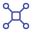

ExoStack: A Modular Software Architecture for Wearable Robotics using ROS 2
IEEE Robotics and Automation Practice
Submitted, 2026
Public link to add
Research platforms/2026
A modular ROS 2 architecture for deployment and human-in-the-loop experimentation
CSIR–Central Mechanical Engineering Research Institute
The project
Wearable-robot experiments evolve as quickly as their hardware: a sensor changes, a new joint is added, or a fixed assistance profile becomes an optimization experiment. ExoStack addresses this integration problem through three coordinated layers: embedded sensing and actuation (ESA), host-side ExoCore processing, and the PASE graphical interface for configuration, launch, and visualization.
The architecture uses declarative device descriptions, self-registering drivers, configurable resources, and replaceable processing modules. A common profile interface connects deployment lookups and optimizer-generated candidates to the same execution path. Demonstrations on knee and hip exosuits show how the architecture reconfigures across physical platforms and personalization workflows.
ESA · ExoCore · PASE
ESA handles embedded device acquisition and actuation; ExoCore coordinates synchronized sensing, gait events, profile construction, motion planning, and experimental feedback; PASE exposes configuration, launch, and visualization. Resource files carry device parameters, algorithms, lookup tables, and experiment outputs, keeping robot-specific choices separate from the reusable execution path.
The resulting organization supports changes at several scales: adding a sensor driver, replacing an interpolation planner, or moving to a different wearable platform. Interfaces between these layers make those changes explicit, rather than embedding every hardware and experimental assumption in a single control script.
Embedded sensing and actuation
The ESA layer runs on ESP32 boards and communicates with the host through micro-ROS. Declarative descriptors identify each sensor or actuator, its interface, and the parameters needed by its driver. Driver registration associates a device type with its implementation, so new hardware can be added through a consistent extension pattern.
The firmware separates setup from the recurring acquisition and actuation loop, including the reported watchdog behavior. This is an engineering interface for heterogeneous devices rather than a claim that every possible sensor is already supported. The useful abstraction is a repeatable route from a physical peripheral to an addressable signal in the wearable-robot stack.
Modular execution in ExoCore

One profile path for deployment and optimizationExoCore separates synchronization, gait-event detection, profile building, motion planning, and cost computation into configurable ROS 2 nodes. Gait events trigger execution of waypoint profiles, while replaceable interpolation planners turn the same waypoint representation into actuation commands. A deployment lookup can therefore supply a profile without changing the downstream execution machinery.
During HIL experiments, an optimizer supplies candidate parameters to that same profile interface. Candidate-indexed feedback ties a measured cost to the profile that produced it, closing the experimental loop without confusing successive trials. This shared route keeps a personalized profile compatible with the path used after calibration.
Program and See
PASE is the PyQt5 graphical interface described in ExoStack for selecting configuration, launching the system, and visualizing signals. It sits above the same resource files and ROS 2 modules used by the framework, giving an experimenter a coherent entry point into a distributed wearable system.
The architectural schematic shows how PASE connects configuration with runtime data. [Dedicated application screenshot and screen recording to be added.]
Bayesian optimization and CMA-ES
The knee-flexion demonstration uses a pneumatic exosuit and a Bayesian-optimization personalization loop. A separate hip-assistance system transmits force from backpack-mounted pneumatic muscles through tendons and demonstrates CMA-ES personalization. Both use the framework’s common structure for sensing, profile execution, and cost feedback despite different actuation arrangements.
These examples show how the architecture accommodates different robots and experimental choices. Their role is to demonstrate reuse and reconfiguration, not to conclude that one optimizer outperforms the other. The hip exosuit in this study also remains distinct from XoNav’s motor-driven hip navigation interface.
Connected work
IEEE Robotics and Automation Practice
Submitted, 2026

IEEE Transactions on Medical Robotics and Bionics
2026
Replace the manuscript’s anonymous repository placeholder with the confirmed public ExoStack URL.
Provide the final documentation website; the supplied anonymous address is not a publishable destination.
Add an authentic full GUI screenshot or short screen recording to replace the explanatory PASE architecture illustration.
Keep exploring

Wearable robotics
Sensorized pneumatic muscles and rapid personalization for bilateral knee-flexion assistance

Wearable robotics
A causal visuo-inertial pipeline for terrain, locomotion, gait phase, and speed

Research platforms
Tendon-driven plantarflexion assistance and a synchronized human-in-the-loop testbed